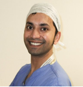

Mabs
Mr Mahbub (Mabs) Alam was appointed a Consultant in Trauma & Orthopaedic Surgery at Barking, Redbridge,
Havering Hospitals NHS Trust in April 2014. He grew up in Bethnal Green and read Medicine at University
College London, receiving a Goldsmith’s Guild Scholarship. He also captained the Hockey team. After gaining
BSc (Hon) and MBBS degree’s, his initial surgical training included the surgical rotation at Bart’s and the
London, where he developed his passion for Orthopaedics, Knee Surgery and Sports Injuries. He worked at
Professorial units at the Royal London and Charing Cross Hospitals.

Mr Mahbub Alam
Consultant in Trauma & Orthopaedic Surgery